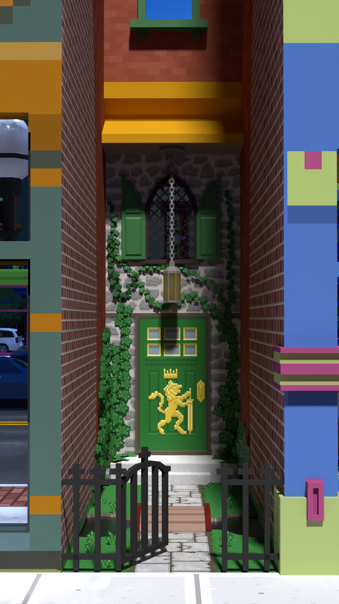
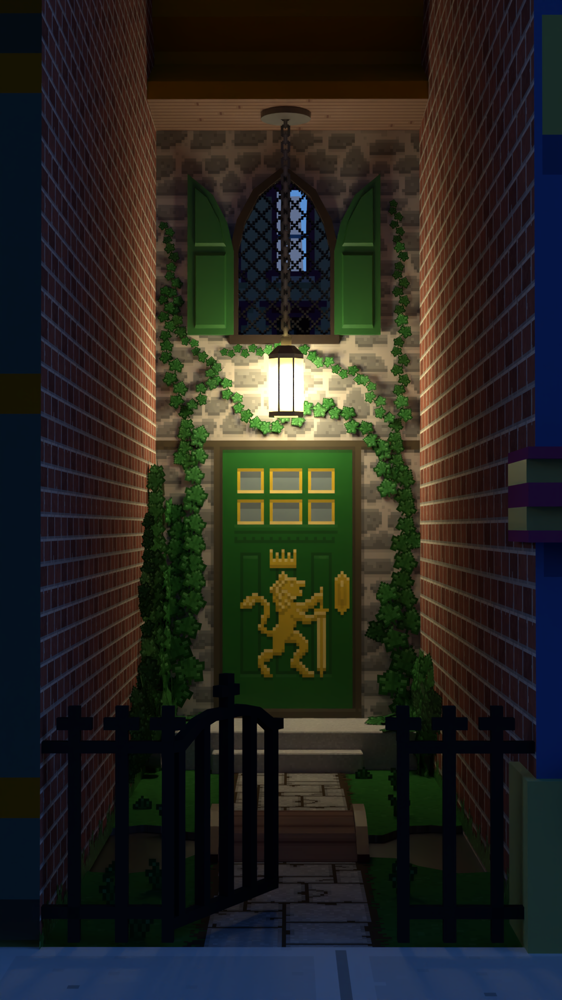

Home > Locations
The Shop
About
A magic shop in the heart of
Rhine City that sells artifacts of untold power to those who can afford it, or in some cases... can't. The shop is nestled in an alley between two buildings. Some wonder how the shop is much larger on the inside than it looks from the outside; is it magic? Actually
Sylvia just also owns the 2 adjoining buildings and has expanded the shop into the backs of both.

